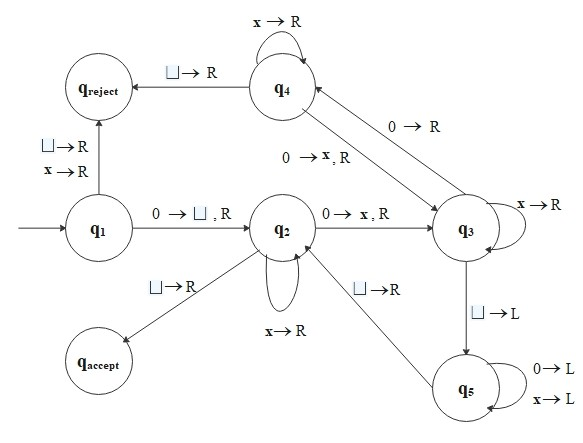

Turing Machines (TMs)
We saw that finite automata recognize regular languages
and pushdown automata recognize context-free languages, but
both models have fundamental limitations. The Turing machine, introduced by Alan Turing,
removes these limitations by providing an infinite tape that serves as both input and unbounded read/write memory.
It is the standard model for defining what it means to compute.
Definition: Turing Machine
A Turing machine is a 7-tuple \((Q, \Sigma, \Gamma, \delta, q_0, q_{accept}, q_{reject})\) where
\(Q, \Sigma, \Gamma\) are finite sets and
- \(Q\) is the set of states,
- \(\Sigma\) is the input alphabet, not containing the blank symbol \(\sqcup\),
- \(\Gamma\) is the tape alphabet, where \(\sqcup \in \Gamma\) and \(\Sigma \subseteq \Gamma\),
- \(\delta: Q \times \Gamma \to Q \times \Gamma \times \{L, R\}\) is the transition function,
- \(q_0 \in Q\) is the start state,
- \(q_{accept} \in Q\) is the accept state,
- \(q_{reject} \in Q\) is the reject state, where \(q_{accept} \neq q_{reject}\).
The key differences between a Turing machine and a finite automaton are:
- The tape has infinite length. Initially it contains the input string,
with blank symbols (\(\sqcup\)) filling every other cell.
- A Turing machine can both read symbols from the tape and write symbols on it.
- The read-write head can move both left (L) and right (R).
To store information, the machine writes it on the tape; to retrieve it later, the head
moves back to where it was written.
- The accept and reject states take effect immediately upon entry.
A computation therefore has three possible outcomes: accept, reject, or loop
(run forever without halting).
A Turing machine is strictly more powerful than any finite automaton or pushdown automaton, and is believed
to capture the full power of any real computer. If a problem cannot be solved by a Turing machine, it is
beyond the theoretical limits of computation.
At each step, a Turing machine's state of computation is captured by a configuration,
which records three items:
- Current state
- Current tape contents
- Current head location
For example, the configuration
\[
1001\, q_5\, 0110
\]
represents a tape containing \(10010110\), with the machine in state \(q_5\) and the head positioned
on the fifth symbol (the first 0 after the state label).
A Turing machine \(M\) accepts input \(w\) if there exists a sequence of configurations \(C_1, C_2, \ldots, C_k\) such that:
- \(C_1\) is the start configuration of \(M\) on \(w\).
- \(C_i\) yields \(C_{i+1}\).
- \(C_k\) is an accepting configuration.
The collection of strings that \(M\) accepts is the language of \(M\), denoted \(L(M)\).
Definition: Turing-Recognizable and Turing-Decidable
A language \(L\) is Turing-recognizable (or recursively enumerable)
if some Turing machine recognizes it - that is, the machine accepts every string in \(L\),
but may loop forever on strings not in \(L\).
A language \(L\) is Turing-decidable (or simply decidable) if some
Turing machine decides it — that is, the machine halts on every input, accepting strings in
\(L\) and rejecting strings not in \(L\).
Every decidable language is Turing-recognizable, but the converse does not hold - some Turing-recognizable
languages are not decidable. The distinction hinges on whether the machine is guaranteed to halt.
Example:
Consider a language
\[
L_1 = \{0^{2^n} | n \geq 0\}
\]
which generates all strings of \(0\)s whose length is a power of 2.
A Turing machine \(M_1\) must decide \(L_1\):
\(M_1 = \) "On input string \(w\): "
- Read left to right across the tape, crossing out every other \(0\).
- If in Stage 1, the tape contained a single \(0\), accept.
- If in Stage 1, the tape contained more than a single \(0\) and the number of \(0\)s was odd, reject.
- Return the head to the left-hand end of the tape.
- Go back to Stage 1."
\(Q = \{q_1, q_2, q_3, q_4, q_5, q_{accept}, q_{reject}\}, \, \Sigma = \{0\}, \, \Gamma = \{0, \text{ x }, \sqcup\}\), and the state diagram
is as follows:

For example, if input is \(0000\), the sequence of configurations is as follows
\[
\begin{align*}
&q_1 0 0 0 0 \Rightarrow \sqcup q_2 0 0 0 \Rightarrow \sqcup \text{x} q_3 0 0 \Rightarrow \sqcup \text{x} 0 q_4 0 \\\\
&\Rightarrow \sqcup \text{x} 0 \text{x} q_3 \sqcup \Rightarrow \sqcup \text{x} 0 q_5 \text{x} \sqcup \Rightarrow \sqcup \text{x} q_5 0 \text{x} \sqcup \\\\
&\Rightarrow \sqcup q_5 \text{x} 0 \text{x} \sqcup \Rightarrow q_5 \sqcup \text{x} 0 \text{x} \sqcup \Rightarrow \sqcup q_2 \text{x} 0 \text{x} \sqcup \\\\
&\Rightarrow \sqcup \text{x} q_2 0 \text{x} \sqcup \Rightarrow \sqcup \text{x} \text{x} q_3 \text{x} \sqcup \Rightarrow \sqcup \text{x} \text{x} \text{x} q_3 \sqcup \\\\
&\Rightarrow \sqcup \text{x} \text{x} q_5 \text{x} \sqcup \Rightarrow \sqcup \text{x} q_5 \text{x} \text{x} \sqcup \Rightarrow \sqcup q_5 \text{x} \text{x} \text{x} \sqcup \\\\
&\Rightarrow q_5 \sqcup \text{x} \text{x} \text{x} \sqcup \Rightarrow \sqcup q_2 \text{x} \text{x} \text{x} \sqcup \Rightarrow \sqcup \text{x} q_2 \text{x} \text{x} \sqcup \\\\
&\Rightarrow \sqcup \text{x} \text{x} q_2 \text{x} \sqcup \Rightarrow \sqcup \text{x} \text{x} \text{x} q_2 \sqcup \Rightarrow \sqcup \text{x} \text{x} \text{x} \sqcup q_{accept}.
\end{align*}
\]
Algorithms
An algorithm is an effective procedure - a finite sequence of precise instructions that, given an input,
produces an output in a finite number of steps. Although algorithms have been used throughout the history of mathematics
(Euclid's algorithm for GCD dates to ~300 BCE), they were not given a precise mathematical definition until 1936, when
Alonzo Church (via the \(\lambda\)-calculus) and Alan Turing (via the Turing machine) independently formalized the concept.
Church-Turing Thesis
Every effective algorithm can be implemented as a Turing machine. Equivalently,
any function computable by an algorithm (in the intuitive sense) is computable by a Turing machine.
The Church-Turing thesis is not a theorem (it cannot be formally proved, since "algorithm" in the intuitive sense is not
a formal concept), but it is universally accepted and has been supported by every proposed alternative model of computation
turning out to be equivalent to Turing machines in power.
Now we have a fundamental question: are there problems that no algorithm can solve? Remarkably, the answer is yes.
Studying unsolvability is valuable for two reasons. First, recognizing that a problem is algorithmically
unsolvable guides us to modify or relax it into a tractable variant. Second, understanding the absolute limits of computation
provides deep insight into the structure of problems themselves.
We summarize the key facts about the decidability hierarchy. These results establish the relationships
among the language classes we have studied.
Theorem: Decidability Hierarchy
- Every context-free language (CFL) is decidable.
- Some Turing-recognizable languages are undecidable.
- A language is decidable if and only if both it and its complement are Turing-recognizable
(i.e., it is both Turing-recognizable and co-Turing-recognizable).
Note: Modern computers are essentially finite versions of Turing machines (more precisely, random-access machines (RAM) with bounded memory).
Any algorithm that runs on a real computer can, in principle, be translated into a Turing machine, although it may be inefficient.
Unsolvability
The existence of undecidable languages still leaves open the possibility that every language is at least recognizable.
The following theorem shows that even this weaker condition fails - there are languages beyond the reach of any Turing machine
whatsoever.
Theorem: Existence of Non-Recognizable Languages
Some languages are not Turing-recognizable.
Proof:
First, we show that the set of all Turing machines is countable.
Note that each Turing machine \(M\) can be encoded as a finite string \(\langle M \rangle\) over some alphabet \(\Sigma\).
The set of all strings \(\Sigma^*\) over the alphabet \(\Sigma\) can be written as
\[
\Sigma^* = \bigcup_{n \geq 0} \Sigma^n,
\]
where \(n\) is any nonnegative integer, and \(\Sigma^n\) is the set of strings of length \(n\).
Since each \(\Sigma^n\) is finite and a countable union of finite sets is countable, it follows that \(\Sigma^*\) is countable.
Since every Turing machine \(M\) can be encoded as a finite string \(\langle M \rangle \in \Sigma^*\), the set of all
Turing machines is a subset of \(\Sigma^*\). As any subset of a countable set is countable, it follows that the set of all
Turing machines is countable.
Next, we show that the set of all languages is uncountable.
Let \(B\) be the set of all infinite binary sequences, defined as \(B = \{b: \mathbb{N} \to \{0, 1\}\}\).
It is known that \(B\) is uncountable because it can be placed in one-to-one correspondence with the power set
of \(\mathbb{N}\), which has a strictly greater cardinality than \(\mathbb{N}\). Each language over \(\Sigma\) is
any subset of \(\Sigma^*\). Thus, the set of all languages over alphabet \(\Sigma\) is written as
\[
L = \mathcal{P}(\Sigma^*).
\]
Since \(\Sigma^*\) is countable, we can enumerate it as
\[
\Sigma^* = \{s_1, s_2, s_3, \ldots \}.
\]
For any language \(A \in L\), define its characteristic sequence \(\chi_A\) by
\[
\chi_A (i) = \begin{cases}
1, &\text{if \(s_i \in A\)} \\
0, &\text{if \(s_i \notin A\)}
\end{cases}.
\]
Define the function \(f: L \to B\) by \(f(A) = \chi_A\).
If \(A \neq A'\), then there exists some index \(i\) for which \(s_i\) is in one of \(A\) or \(A'\) but
not the other, so \(\chi_A (i) \neq \chi_{A'} (i) \). Also, for any infinite binary sequence \(b \in B\),
define the language \(A_b = \{s_i \in \Sigma^* : b(i) = 1\}\). Then \(f(A_b) = b\). Thus, \(f\) is a
bijection between \(L = \mathcal{P}(\Sigma^*)\) and \(B\).
Since \(B\) is uncountable and there is a bijection \(f\) between \(L\) and \(B\), it follows that
the set of all languages over \(\Sigma\) is uncountable.
Therefore, since the set of all Turing machines is countable, and the set of all languages is
uncountable, there exist languages that cannot be recognized by any Turing machine.
This is one of the most profound results in mathematics: there exist well-defined problems that
no algorithm can ever solve. However, many practically important problems that are
undecidable or intractable in the worst case can still be addressed through
approximation algorithms and heuristics, which find good
(if not provably optimal) solutions in reasonable time.
Having established what is and is not computable, we next ask: among the decidable problems,
how efficiently can they be solved? This is the subject of
time complexity.